Фея - это еще один ваш спутник, как и Черный дух. Она - маленькое магическое существо, очень любопытное, общительное и бесячая порой до ужаса.
 фея
фея
Содержание:
Характер
Фея может изменить характер при Улучшении. Всего бывает 16 характеров феи:
Зеленые характеры:
- Т1 — Вежливая
- Т2 — Приветливая
- Т3 — Ласковая
- Т4 — Чуткая
- Т5 — Добрая
Красные характеры:
- Т1 — Энергичная
- Т2 — Задорная
- Т3 — Веселая
- Т4 — Беззаботная
- Т5 — Оптимистичная
Синие характеры:
- Т1 — Серьезная
- Т2 — Сдержанная
- Т3 — Осторожная
- Т4 — Надежная
- Т5 — Мудрая
- Т6 — Блистательная - получается при абсолютном максимуме характеристик, когда вам уже некуда расти. При получении феи с Блистательным характером доступна функция окрашивания крыльев и волос.
От характера зависят предпочтения и диалоги.
Приоритеты прокачки характеристик влияют на то, какой характер получит фея:
- Озорство + Забота = зеленые характеры
- Находчивость + Смелость = красные характеры
- Спокойствие + Честность = синие характеры
Характер определяется максимальной парой характеристик одного цвета (если два максимума одинаковые, есть приоритет зелёная > красная > синяя).
Цвет крыльев и волос феи все ещё определяется максимальной среди всех характеристик и может не совпадать с характером.
Когда фея в состоянии Недовольной малютки вы сможете увидеть, какой характер она приобретет после возврата в нормальное состояние.

ВАЖНОЕ по характеру.
Характер определяется максимальной парой характеристик одного цвета (если два максимума одинаковые, есть приоритет зеленая > красная > синяя).
Например вам нужно получить Чуткую фею (пример специально для Сатоси),
у тебя должны быть нравы Озорство и Забота минимум по 280, остальные же примерно по 135, возможно больше но не точно.
Для Т1 характера надо иметь 30-30 в нужной паре и меньше в остальных. Исключение — Т1 зеленый (Вежливая), его вы получаете автоматом при взрослении феи.
Для Т2 характера минимальные требования 100-100 в нужной паре и 50-50 в остальных двух.
Для Т3 характера минимальные требования 200-200 в нужной паре и 100-100 в остальных двух.
Для Т4 характера минимальные требования 280-280 в нужной паре и 135-135 в остальных двух.
Получение любого Т4 характера открывает вам доступ к развитию феи до Ослепительной (оранжевого грейда).
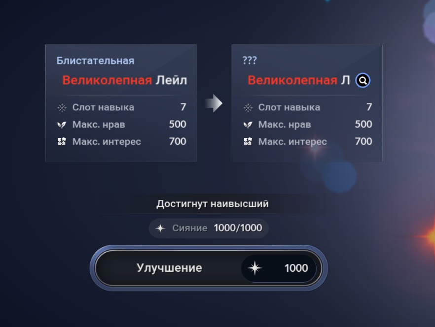
Грейд (класс)
Феи бывают 7 грейдов:
- Тусклая (белый грейд)
- Светлая (зеленый грейд)
- Изящная (синий грейд)
- Яркая (фиолетовый грейд)
- Сияющая (желтый грейд)
- Ослепительная (оранжевый грейд)
- Великолепная (красный грейд)
Повышать грейд можно улучшая фею за очки сияния. Шанс успешного улучшения понижается с повышением грейда, но при каждом неудачном улучшении усиливается Благословение Тейи. Когда оно накопится, можно гарантированно улучшить фею.
Грейд феи влияет на количество устанавливаемых навыков и лимит интереса.
Просмотреть параметры каждого грейда можно нажав на лупу в меню улучшения феи.

| Грейд | Навыки | Лимит интереса | Макс. нрав | Шанс улучшения |
|---|---|---|---|---|
| Тусклая | 1 | 150 | 300 | 30% |
| Светлая | 2 | 250 | 300 | 10% |
| Изящная | 3 | 350 | 300 | 5% |
| Яркая | 4 | 450 | 300 | 3% |
| Сияющая | 5 | 550 | 300 | 2% |
| Ослепительная | 6 | 550 | 400 | 1% |
| Великолепная | 7 | 550 | 500 | - |
Состояние
Состояние
У феи три состояния - Капустка, Лейла и Недовольная малютка.
Капусткой фея появляется у вас впервые и после взросления в это состояние она не возвращается. У Капустки ограниченное меню действий и общения и свои уникальные разговоры.
Лейла - взрослая фея. В этом состоянии ваша фея будет находиться большую часть времени. Здесь ей доступны все действия, а скорость набора сияния стандартная. Из этого состояния фею можно попытаться улучшить.
Недовольная малютка - фея становится после неудачи улучшения. Ее облик меняется на Капустку, но уже прокачанные характеристики и грейд не понижаются.
В этом состоянии у феи ускорен набор сияния. У этого состояния также уникальные разговоры и просьбы. При улучшении из этого состояния фея снова становится Лейлой, которой была до неудачи.
Характеристики
Характеристики
У феи есть 6 характеристик: Озорство, Честность, Спокойствие, Смелость, Находчивость, Забота.
Максимум развития характеристик зависит от уровня улучшения феи.
Прокачивать характеристики можно через общение с феей.Резонанс разных характеристик складывается и постепенно будет расти ваша БС.
Максимально прокачанная характеристика определяет цвет волос и крыльев феи.
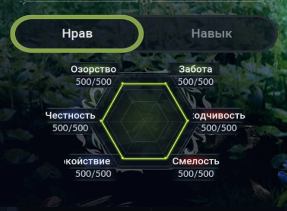
Улучшение
Фея может вырасти в меню Улучшения, по мере ее роста увеличивается количество слотов навыков и максимальный показатель характеристик.
Для улучшения требуется 1000 очков сияния.
При неудачном улучшении получаем Благословение Тейи (фейл стак). Когда он накопится, можно гарантированно улучшить фею. При успешном улучшении фейл стак обнуляется.
Для 100% шанса получить Светлую Лейлу (зеленый грейд) вам понадобится 2 фейла улучшения и 3-я попытка будет успешной.
Для 100% шанса получить Изящную Лейлу (синий грейд) вам понадобится 5 фейлов улучшения и 6-я попытка будет успешной.
Для 100% шанса получить Яркую Лейлу (фиол грейд) вам понадобится 9 фейлов улучшения и 10-я попытка будет успешной.
Для 100% шанса получить Сияющую Лейлу (желтый грейд) вам понадобится 15 фейлов улучшения и 16-я попытка будет успешной.
Для попытки усиления Сияющей Лейлы до Ослепительной необходимо получить фею с чутким, беззаботным или надежным характером (Т4).
Для 100% шанса получить Ослепительную Лейлу вам понадобится 32 фейла улучшения и 33-я попытка будет успешной.
Для попытки усиления Ослепительной Лейлы до Великолепной необходимо получить фею с добрым, оптимистичным или мудрым характером (Т5).
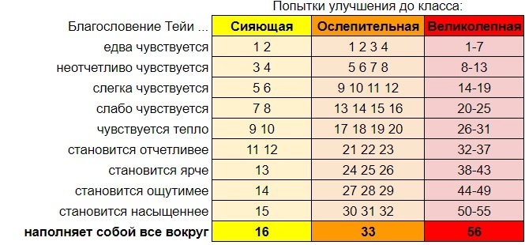
Предмет «Сладкий мед» повышает шанс успеха на 50% при попытке улучшения феи до ослепительного или великолепного класса. Сладкий мед можно получить с определенной вероятностью из подарков феи 6 ур.
При улучшении может измениться характер феи, также может увеличиться лимит характеристик. Грейд при этом не обязательно повышается.
При неудачном улучшении взрослой феи ее внешний вид меняется на недовольную малютку-фею, но повышенные характеристики не снижаются и грейд не падает.
В виде недовольной малютки-феи возможны действия взрослой феи. В этом состоянии у феи уникальные разговоры и квесты и ускорен набор сияния.
В зависимости от показателей нрава может определиться характер феи при улучшении.
При улучшении недовольной феи ее грейд не повышается, она принимает облик феи, которой была до неудачи.
При получении нового характера феи данные регистрируются в Альбоме – Рост.
Альбом
Данную инфу можно посмотреть в Гайдах, в боте.
Общение (разговор)
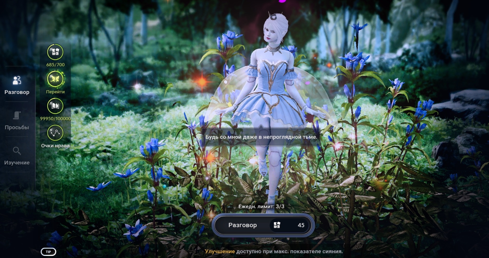
Если вы уже начали разговор, можно выйти из него, пока вы не выбрали ответ. Например, чтобы вернуться на главный экран феи и посмотреть ее характеристики. Когда вы выбираете ответ на вопрос феи, ее характеристики изменяются. Характеристика не может превысить максимальное значение (оно зависит от уровня улучшения феи) и не может опуститься ниже 0. В меню Общения при разговоре с феей класса «Светлая» и выше отображаются показатели нрава, повышающиеся или понижающиеся в зависимости от выбираемого ответа. По окончании разговора появляется график изменения характеристик.
В день можно использовать разговор 3 раза.
Предмет “Шепчущая роса” сбрасывает ежедневный счетчик разговоров. 1 Шепчущую росу ежедневно и +3 еженедельно можно купить в игровом магазине за 190 черного жемчуга (Особые возможности - Другое).
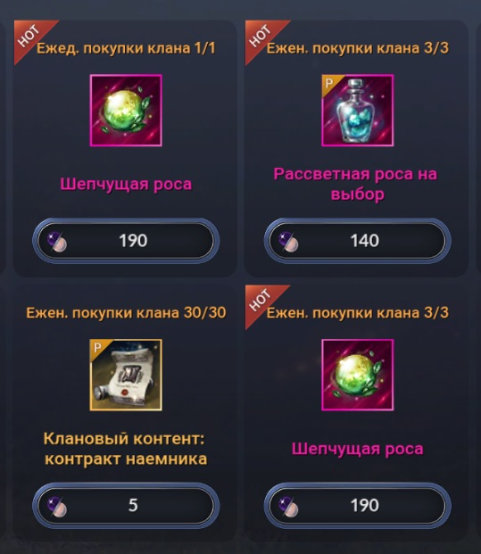
Общение (просьбы)
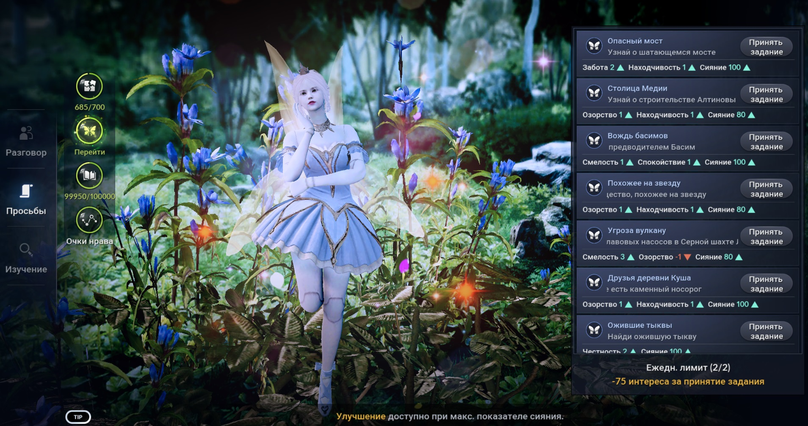
Выбираем просьбу в списке справа Принимаем или отменяем в зависимости от бонусной характеристики Для выполнения одной просьбы требуется 75 очков интереса, в день можно выполнить 2 просьбы. Существует два типа просьб - повторяемые (внизу списка) и неповторяемые (вверху). Обычно одноразовые неповторяемые просьбы дают лучше награду и иногда открывают доступ к сюрпризам и другим уникальным просьбам. Делайте их в первую очередь. Есть просьбы, которые появляются только после выполнения определенных условий.
Особый предмет “Бутылка с рассветной росой” при активации дает вам дополнительный квест (сверх лимита просьб в день).
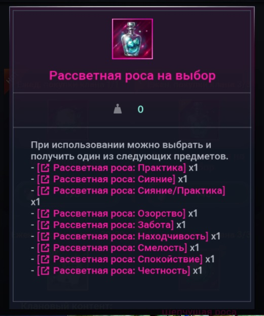
Квест будет выпадать случайный, в награду вы будете получать сияние, практику или повышение характеристик. Задание во всех квестах - убить 1000 мобов. Одновременно можно взять 3 разных квеста. Количество квестов в день не ограничено. По 2 Бутылки с рассветной росой ежедневно можно купить в игровом магазине за 70 черного жемчуга / шт. (Особые возможности - Другое). По 3 Бутылки с рассветной росой по выбору еженедельно можно купить в игровом магазине за 140 черного жемчуга / шт. Бутылки и открытые квесты хранятся в жемчужном инвентаре и не имеют срока годности.
Изучение
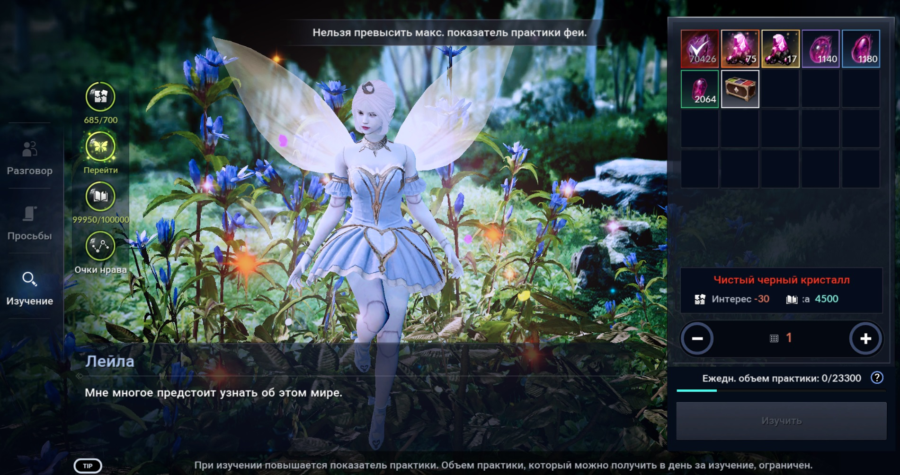
Изучение доступно только для взрослой феи. Здесь можно передать фее подарок, при этом расходуется интерес и набираются очки практики. В зависимости от характера желаемые подарки отличаются, а в зависимости от подарков — и количество получаемой практики. В нижней части экрана под списком предметов отображается ежедневный лимит практики.
Действие и игры
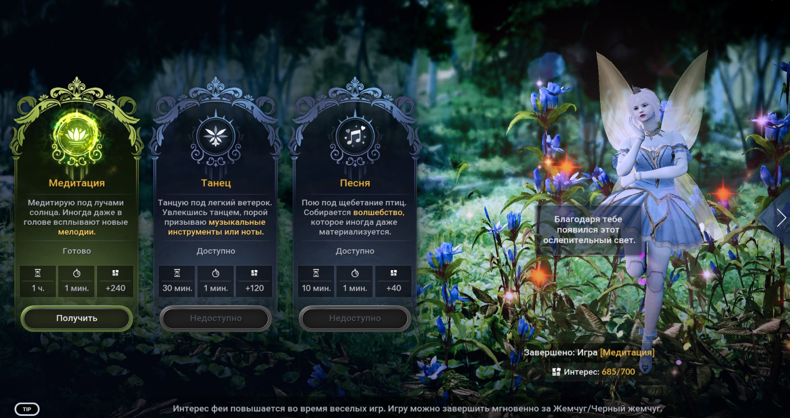
С помощью игр можно быстро набрать интерес феи.
Медитация занимает 1 час, дает 240 интереса.
Танец занимает 30 минут, дает 120 интереса.
Песня занимает 10 минут, дает 40 интереса.
С небольшим шансом при завершении игры может прокнуть суперуспех, который даст х2 интереса и дополнительную награду.
Показатель интереса не может превысить максимум (зависит от грейда феи).
Во время одной игры нельзя выполнять другую.
Когда очки интереса достигнут максимума, игры недоступны.
Быстрый доступ к завершению и запуску игр есть прямо с кнопки феи внизу игровой панели.
Действие - отправка
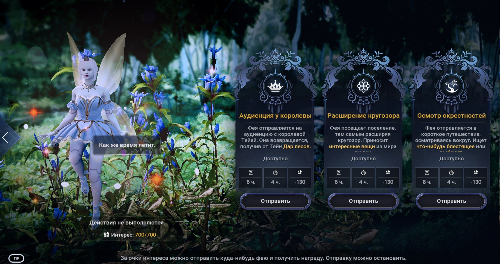
Отправка доступна только для взрослой феи. Отправка феи доступна за интерес и занимает 8 часов. В день вы можете получить награду за отправку только 1 раз. Если вы получили награду за отправку, в этот день отправка будет недоступна. Во время отправки нельзя начать игру или другую отправку. Выполняющуюся отправку можно остановить. Если прервать отправку, использованный в начале интерес не будет возвращен. В результате отправки фея будет редко приносить уникальные предметы для своего развития, чаще разные полезности - ресурсы, подарки, свитки печати реликвии, рыбу.
За Отправку “Аудиенция у королевы” вы можете в случае суперуспеха получить редкий предмет “Забавный концерт” (восполняет 150 Интереса).
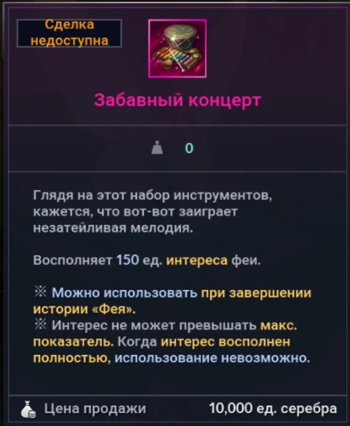
За Отправку “Расширение кругозора” вы можете в случае суперуспеха получить редкий предмет “Памятная книга со сказками” (восполняющий 10 000 Практики).
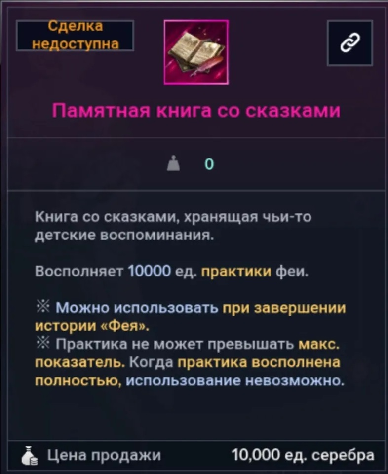
За Отправку “Осмотр окрестностей” вы можете в случае суперуспеха получить редкий предмет “Сверкающая бутылка” (восполняет 150 Сияния).
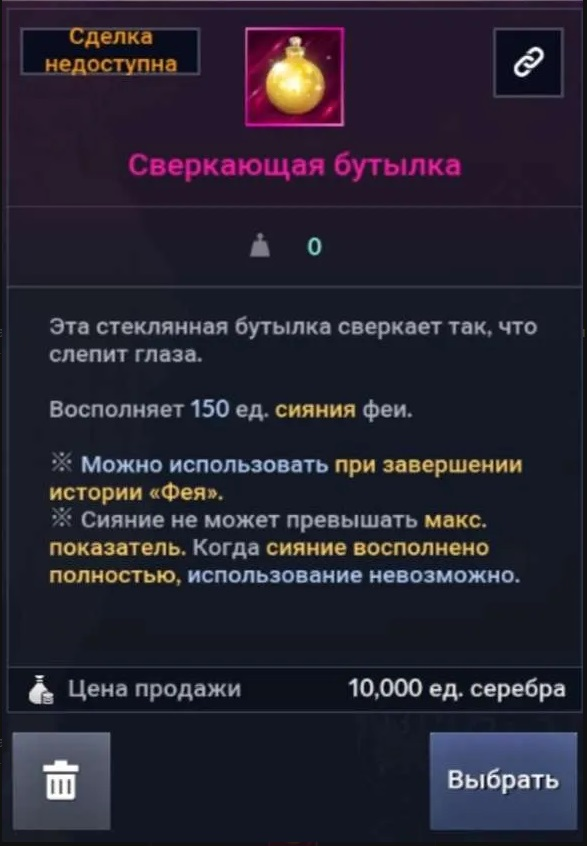
Подарки
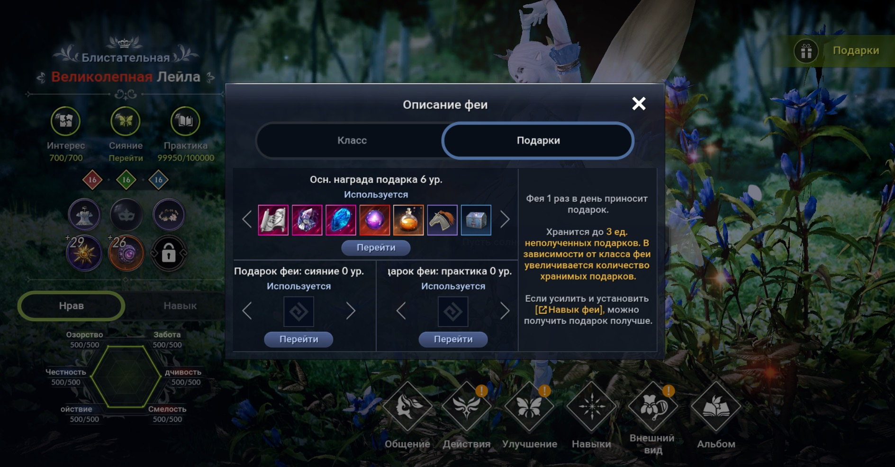
В течение дня фея приносит маленькие подарки. Она сообщает об этом всплывающей фразой над своей иконкой. Если зайти в меню феи, можно получить подарок. Это может быть рыба, предмет для опознания из пустыни или редкий подарок (1-й уровень подарков). Подарки имеют 6 уровней. Уровень приносимых подарков определяется активным навыком феи “Улучшение подарка феи” (синяя ветка). Количество подарков в день зависит от грейда феи. На 6 уровне навыка фея будет приносить вам даже оси и акрады..
Подарки 1 уровня вы будете получать даже при неактивном навыке. Дополнительную практику и сияние, получаемые вместе с подарком феи, дают активные навыки феи “Подарок феи: практика” и “Подарок феи: сияние”. У феи есть что-то вроде склада подарков, где она хранит неполученные подарки, и может выдать вам их сразу 2 или 3, если вы несколько дней не забирали подарки. Объем склада зависит от грейда. Сладкий мед можно получить с определенной вероятностью из подарков феи 6 ур.